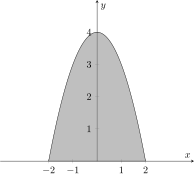
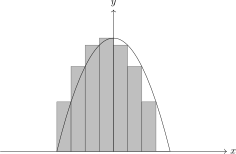
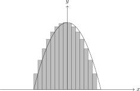
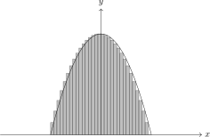

Nền tảng toán học của đồ họa 3D¶
Điểm, vector và hệ tọa độ¶
Cho \(\mathcal E\) là một không gian affine liên kết với không gian vector \(V\). Các phần tử của \(\mathcal E\) gọi là điểm và được kí hiệu bằng chữ hoa \(A,B,C,\ldots\). Với hai điểm \(A,B\), vector đi từ \(A\) tới \(B\) được kí hiệu là \(\overrightarrow{AB}\).
Nói chính xác hơn, ta có một ánh xạ liên kết
Ánh xạ này được xác định bởi hai tính chất cơ sở. Trước hết, với mỗi vector \(\bm{u}\in V\) và mỗi điểm \(A\in\mathcal E\), tồn tại duy nhất điểm \(B\in\mathcal E\) sao cho
Thứ hai, với mọi \(A,B,C\in\mathcal E\), ta có hệ thức Chasles:
Đặc biệt,
Như vậy điểm không phải là một bộ số hay một vector. Chỉ sau khi chọn hệ tọa độ, điểm \(A\) mới có tọa độ \(A(x_A,y_A,z_A)\).
Khi chọn gốc tọa độ \(O\) và cơ sở \((\bm{e}_1,\bm{e}_2,\bm{e}_3)\), tọa độ của \(A\) là bộ ba duy nhất \((x_A,y_A,z_A)\) thỏa
Do đó, với \(A(x_A,y_A,z_A)\) và \(B(x_B,y_B,z_B)\), hệ thức Chasles cho tọa độ
Cách viết này luôn giữ rõ đâu là điểm và đâu là vector.
Với \(\bm{u}, \bm{v} \in \mathbb{R}^3\), tích vô hướng
đo góc và phép chiếu. Hai vector trực giao khi tích vô hướng bằng \(0\). Tích có hướng
vuông góc với mặt phẳng sinh bởi \(\bm{u}, \bm{v}\) và có độ dài bằng diện tích hình bình hành tương ứng. Chuẩn hóa vector khác không cho
Phép chuẩn hóa cần ngưỡng \(\varepsilon\) để tránh chia cho một độ dài gần \(0\).
Không gian affine¶
Không gian vector \(V\) trong định nghĩa được gọi là không gian vector liên kết, hay không gian nền, của \(\mathcal E\) và có thể kí hiệu \(\overrightarrow{\mathcal E}\). Nếu \(V\) có số chiều \(n\) thì \(\mathcal E\) là không gian affine \(n\) chiều:
Không gian affine thực dùng trường \(\mathbb R\); không gian affine phức dùng trường \(\mathbb C\). Trong đồ họa, ta chủ yếu làm việc với không gian affine thực hai hoặc ba chiều.
Không gian vector \(V\) tự nó có một cấu trúc affine chính tắc: xem các phần tử của \(V\) là điểm của không gian affine chính tắc và đặt ánh xạ liên kết
Đây là lí do điểm và vector có thể cùng được lưu bằng một bộ số trong chương trình. Tuy nhiên sự đồng nhất này phụ thuộc cấu trúc chính tắc hoặc hệ tọa độ; trong hình học affine tổng quát, điểm và vector vẫn là hai loại đối tượng khác nhau.
Từ hai tiên đề ở trên và hệ thức Chasles suy ra các tính chất cơ bản
trong đó \(O\) là một điểm tùy ý ở đẳng thức cuối.
Phẳng affine¶
Cho \(P_0\in\mathcal E\) và \(W\) là một không gian vector con của \(V\). Tập hợp
được gọi là một phẳng affine đi qua \(P_0\), có không gian chỉ phương \(W\). Nếu \(\dim W=m\) thì \(\alpha\) là một \(m\)-phẳng và
Điểm, đường thẳng và mặt phẳng lần lượt là \(0\)-, \(1\)- và \(2\)-phẳng. Trong không gian \(n\) chiều, một \((n-1)\)-phẳng gọi là siêu phẳng. Mọi điểm thuộc \(\alpha\) đều có thể đóng vai trò \(P_0\); không gian chỉ phương \(W\) là duy nhất.
Nếu \((\bm a_1,\ldots,\bm a_m)\) là một cơ sở của \(W\), các điểm của \(\alpha\) được tham số hóa bởi
Đường thẳng, mặt phẳng và không gian ba chiều lần lượt là các trường hợp \(m = 1, 2, 3\). Biểu diễn này là cơ sở của ray, cạnh, mặt phẳng clipping và các phép giao trong đồ họa. Một phẳng affine cũng là một không gian affine có không gian nền \(W\), nên thường được gọi là không gian affine con.
Độc lập affine và bao affine¶
Các điểm \(P_0, \ldots, P_k\) độc lập affine khi các vector \(\overrightarrow{P_0P_1},\ldots,\overrightarrow{P_0P_k}\) độc lập tuyến tính. Định nghĩa không phụ thuộc điểm nào được chọn làm \(P_0\). Trong một không gian affine \(n\) chiều, một hệ có nhiều hơn \(n+1\) điểm luôn phụ thuộc affine.
Bao affine của một tập điểm là phẳng nhỏ nhất chứa tập đó. Sau khi chọn một điểm \(O\), bao affine của \(P_0,\ldots,P_k\) gồm các điểm \(P\) thỏa
Nếu thêm điều kiện \(\lambda_i \geqslant 0\), ta nhận được bao lồi. Với ba đỉnh của tam giác, các \(\lambda_i\) chính là tọa độ barycentric; chúng vừa kiểm tra một điểm có nằm trong tam giác vừa nội suy thuộc tính đỉnh.
Tâm tỉ cự¶
Cho các điểm \(P_1,\ldots,P_k\) và các hệ số \(\lambda_1,\ldots,\lambda_k\) có tổng \(\lambda=\sum_i\lambda_i\ne0\). Tâm tỉ cự tương ứng là điểm duy nhất \(G\) thỏa
Điểm \(G\) không phụ thuộc vào điểm \(O\) đã chọn. Một đặc trưng tương đương, hoàn toàn nội tại, là
Khi mọi \(\lambda_i=1\), điểm \(G\) là trọng tâm:
Trọng tâm được dùng để tìm tâm tam giác, tâm một mặt đa giác và điểm đại diện cho một cụm đỉnh.
Mục tiêu affine và đổi hệ tọa độ¶
Một mục tiêu affine gồm gốc \(O\) và một cơ sở \((\bm{e}_1, \ldots, \bm{e}_n)\). Tọa độ \((x_1,\ldots,x_n)\) của điểm \(P\) được xác định bởi
Nếu \(P(x_1,\ldots,x_n)\) và \(Q(y_1,\ldots,y_n)\) thì
Nếu mục tiêu mới có gốc \(O'\) với \(\overrightarrow{OO'}=\bm{b}\) và ma trận \(C\) chứa các vector cơ sở mới viết trong cơ sở cũ, thì hai cột tọa độ \(\bm{x}\) và \(\bm{x}'\) của cùng điểm \(P\) liên hệ bởi
Đây là dạng tổng quát của phép đổi model space sang world space hoặc world space sang camera space. Điều kiện \(\det C\ne0\) bảo đảm hai họ vector cơ sở đều là cơ sở và phép đổi tọa độ khả nghịch.
Ánh xạ affine¶
Cho \(\mathcal E,\mathcal E'\) là hai không gian affine. Ánh xạ điểm \(f:\mathcal E\to\mathcal E'\) là ánh xạ affine nếu tồn tại một ánh xạ tuyến tính \(\vec f:V\to V'\) sao cho với mọi điểm \(P,Q\),
Ánh xạ \(\vec f\) gọi là ánh xạ tuyến tính liên kết của \(f\). Một ánh xạ affine được xác định duy nhất khi biết \(\vec f\) và ảnh của một điểm; hợp của hai ánh xạ affine vẫn là ánh xạ affine. Trong một mục tiêu tọa độ, \(f\) được mô tả bởi
trong đó \([P]\) và \([f(P)]\) lần lượt là cột tọa độ của hai điểm, không phải chính các điểm đó.
Nó bảo toàn các phẳng, đường thẳng, tính song song, tâm tỉ cự và tổ hợp affine. Độ dài và góc chỉ được bảo toàn khi phần tuyến tính \(A\) là một phép đẳng cự. Phép chiếu song song là một ví dụ quan trọng của ánh xạ affine; phép chiếu phối cảnh nói chung không phải ánh xạ affine trong không gian Euclid ba chiều.
Tọa độ thuần nhất¶
Tịnh tiến không phải phép biến đổi tuyến tính trên không gian vector tọa độ. Ta biểu diễn tọa độ thuần nhất của điểm \(A(x_A,y_A,z_A)\) và vector \(\bm{v}=(v_x,v_y,v_z)\) lần lượt bởi
Khi đó cả tịnh tiến, quay, co giãn và phép chiếu phối cảnh đều có thể biểu diễn bằng ma trận \(4 \times 4\). Với quy ước vector cột,
Nếu dùng vector hàng thì thứ tự nhân ma trận phải đảo lại. Không được trộn hai quy ước trong cùng một phép tính.
Biến đổi affine cơ bản¶
Ma trận tịnh tiến là
Ma trận co giãn là
Các phép quay quanh ba trục có dạng
Một world transform thường là tích
Với vector cột, phép ở bên phải tác động trước: mô hình được co giãn, quay rồi mới tịnh tiến. Nói chung \(RT \neq TR\), nên đổi thứ tự có thể biến một phép tự quay thành phép quay quanh một tâm bên ngoài. Nếu tâm quay là \(C(c_x,c_y,c_z)\), phép quay quanh \(C\) được thực hiện bởi
Góc Euler và quaternion¶
Ba phép quay liên tiếp tạo một biểu diễn góc Euler. Chẳng hạn quy ước \(z\)--\(y\)--\(z\) dùng
Biểu diễn này trực quan nhưng phụ thuộc thứ tự và có thể gặp gimbal lock. Quaternion đơn vị
biểu diễn phép quay góc \(\theta\) quanh trục \(\widehat{\bm{u}}\). Hai phép quay hợp thành bằng phép nhân quaternion; nội suy SLERP cho chuyển động quay đều hơn nội suy trực tiếp các góc Euler.
Biến đổi pháp tuyến¶
Nếu vị trí được biến đổi bởi phần tuyến tính \(A\) của world matrix, pháp tuyến không luôn biến đổi bởi chính \(A\). Để bảo toàn trực giao,
Sau phép biến đổi phải chuẩn hóa lại. Chỉ khi \(A\) là phép quay hoặc co giãn đồng đều mới có thể dùng trực tiếp \(A \bm{n}\).
Tổng Riemann và sự rời rạc hóa¶
Tích phân là một ví dụ cơ bản về cách xấp xỉ một đối tượng liên tục bằng các đối tượng rời rạc dễ xử lý. Xét đường cong \(y=f(x)>0\) trên đoạn \([a,b]\). Tích phân
là diện tích phần hình phẳng giới hạn bởi đường cong \(y=f(x)\), trục hoành và hai đường thẳng \(x=a\), \(x=b\). Trong Hình 1, phần tô màu là diện tích dưới đồ thị \(f(x)=-x^2+4\) từ \(-2\) tới \(2\).

Hình 1 Tích phân từ \(-2\) tới \(2\) của hàm số \(f(x)=-x^2+4\).¶
Ta có thể tính chính xác diện tích hình chữ nhật, hình vuông hoặc hình thang. Để tính diện tích giới hạn bởi một đường cong bất kì, ta xấp xỉ nó bằng tổng diện tích các hình chữ nhật. Chia đoạn \([a,b]\) thành \(n\) phần bằng nhau:
Trên đoạn \([x_{i-1},x_i]\), chọn chiều cao hình chữ nhật là \(f(x_i)\), tức dùng đầu mút bên phải. Tổng diện tích các hình chữ nhật là
Các hình sau lần lượt dùng \(8\), \(16\) và \(32\) hình chữ nhật.

Hình 2 Xấp xỉ diện tích bởi \(8\) hình chữ nhật.¶

Hình 3 Xấp xỉ diện tích bởi \(16\) hình chữ nhật.¶

Hình 4 Xấp xỉ diện tích bởi \(32\) hình chữ nhật.¶
Khi số hình chữ nhật tăng, tổng diện tích tiến tới diện tích cần tìm:
Ví dụ tính tích phân qua tổng Riemann¶
Với \(f(x)=-x^2+4\), \(a=-2\) và \(b=2\), ta có
Dùng hai công thức
ta nhận được
Cho \(n\) tiến tới vô cực, suy ra
Nguyên lý này xuất hiện khắp đồ họa máy tính. Một đường cong được thay bằng chuỗi đoạn thẳng; một mặt cong được chia thành các tam giác hoặc tứ giác; một miền ảnh liên tục được lấy mẫu trên lưới pixel. Khi kích thước các phần tử giảm, mô hình rời rạc mô tả hình liên tục chính xác hơn, nhưng số phép tính và lượng bộ nhớ cũng tăng. Vì vậy tessellation và rasterization luôn phải cân bằng giữa độ chính xác và chi phí tính toán.
Mesh tam giác¶
Một bề mặt cong được xấp xỉ bởi triangle mesh. Dữ liệu hình học thường gồm:
vertex buffer chứa vị trí, pháp tuyến, màu, tọa độ texture hoặc tangent;
index buffer mô tả các tam giác bằng chỉ số đỉnh;
topology chỉ cách ghép các chỉ số thành điểm, đoạn hoặc tam giác.
Hình 5 Một hình chữ nhật được chia thành hai tam giác dùng chung hai đỉnh.¶
Thay vì lưu sáu đỉnh lặp, ta lưu \((v_0, v_1, v_2, v_3)\) và dãy chỉ số \((0, 1, 2, 0, 2, 3)\). Thứ tự đỉnh, hay winding order, quyết định hướng pháp tuyến và mặt trước của tam giác.
Với tam giác \(ABC\), một pháp tuyến chưa chuẩn hóa là
Nếu \(\|\bm{n}\|\) gần \(0\), tam giác suy biến và không nên đưa vào các phép tính hình học thông thường.